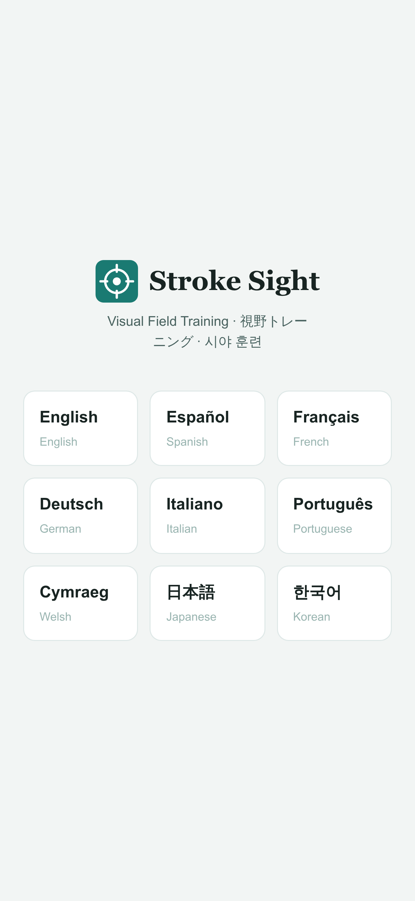
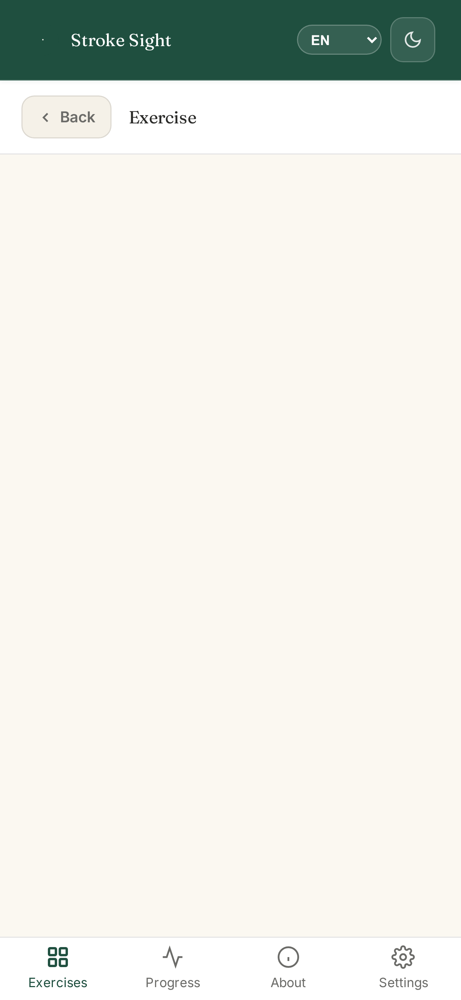
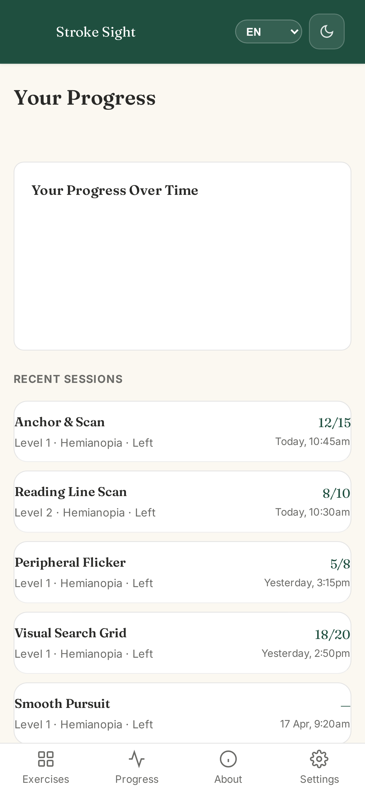

Stroke Sight
Visual Field Trainer
Eight evidence-based exercises for the four most common post-stroke visual and attentional conditions. Grounded in saccadic scanning and smooth pursuit training traditions. Aligned with NICE NG236 recommendations for eye movement therapy.
Eight exercises across four conditions
Each condition has a distinct clinical evidence base. The exercises are designed to match — not a single exercise template applied to different problems, but different therapeutic approaches for different needs.



Hemianopia and Quadrantanopia
- Anchor & Scan — saccadic eye movement training into the affected visual field
- Reading Line Scan — visual scanning practice for reading, rebuilding line-tracking patterns
- Peripheral Flicker — low-demand peripheral awareness stimulation based on flicker research
- Visual Search Grid — systematic scanning of symbol arrays, building compensatory search strategies
Visual Neglect
- Smooth Pursuit — slow tracking toward the neglected side, the approach with the strongest evidence for neglect recovery (Kerkhoff, German Neurological Society guidelines, Klinke Grade B)
- Line Bisection — spatial bias calibration that feeds into Smooth Pursuit difficulty
- Visual Search Grid — also available for neglect, training systematic scanning
Scotoma
- Blind Spot Tracker — awareness training around the blind spot area (not eccentric viewing or PRL training)
- Gap Fill — perceptual completion practice, exercising the brain's ability to interpret incomplete visual information
Who Stroke Sight is for
- Stroke survivors with visual field loss — hemianopia, quadrantanopia, or scotoma
- Stroke survivors with visual neglect — difficulty noticing one side of space
- Occupational therapists and orthoptists — a structured tool for daily home practice between sessions
- Carers and family — something concrete to support rehabilitation without needing clinical training
What to expect
Evidence-based protocols suggest 15–30 minutes daily, at least 5 days per week, for 4–6 weeks. Two shorter sessions may be more effective than one longer session.
You may notice improvements in how confidently you scan your surroundings, how easily you track text while reading, or how quickly you spot things on your affected side. Some users see measurable changes within weeks; for others it takes longer. Consistency matters more than intensity.
Stroke Sight is a wellness support tool — not a medical device. It does not diagnose, treat, or cure any condition. Always follow the guidance of your neuro-optometrist, orthoptist, or rehabilitation team.
Why Stroke Sight, not a generic brain-training app?
General brain-training apps target cognition broadly. They do not address the specific eye-movement patterns that visual field loss and spatial neglect disrupt. Stroke Sight uses different therapeutic approaches for different conditions — saccadic scanning for hemianopia, smooth pursuit for neglect, awareness training for scotoma — each grounded in its own published evidence base. That condition-specific design is what sets it apart.
Key features
- 16 languages with real content — not just translated menus — English, Spanish, French, German, Italian, Portuguese, Welsh, Japanese, Korean, Hindi, Arabic, Chinese, Polish, Latin American Spanish, Brazilian Portuguese, and Canadian French
- Four conditions supported — hemianopia, quadrantanopia, visual neglect and scotoma, each with condition-specific exercises
- 10 adaptive difficulty levels — Start gently and increase challenge as you improve
- Spatial audio cues — stereo sound that moves with visual targets, drawing on multisensory rehabilitation research
- Sound cue control — three-level audio toggle (off, subtle, prominent) for users with hyperacusis or auditory processing difficulties
- Left and right side support — Exercises adapt to left or right side
- Progress tracking — View your accuracy and reaction times over time
- Email progress reports — Share results with your therapist via email (no data leaves the device — uses your own mail app)
- Works fully offline — No internet connection needed after download
- No data collected — All progress stays on your device
Research basis
Stroke Sight's exercises are grounded in techniques studied in published clinical research on visual rehabilitation after stroke:
- Pambakian, A.L.M. et al. (2004). "Saccadic visual search training: a treatment for patients with homonymous hemianopia." Journal of Neurology, Neurosurgery & Psychiatry, 75(10), 1443–1448.
- Zihl, J. (2021). "Rehabilitation of visual field disorders." In Neuropsychological Rehabilitation. Review of compensatory saccadic training approaches.
- Leff, A.P. & Behrmann, M. (2012). "Visual rehabilitation of hemianopia." In Oxford Handbook of Perceptual Organization. Review of current evidence for visual training.
- Raninen, A. et al. (2006). "Improvement of visual field defects after training in patients with chronic damage to the primary visual cortex." Restorative Neurology and Neuroscience, 24(4-6), 383–392.
- Gupta, A. et al. (2024). "Efficacy of rehabilitative techniques for visual field loss post stroke: a systematic review." Brain Injury, published online ahead of print.
The SEARCH trial (Rowe et al., 2025) found equivalent benefit from structured practice regardless of exercise specifics — supporting the value of consistent, daily engagement with any well-designed visual training programme.
These papers inform the training approach — Stroke Sight is not itself a clinically validated tool.
Frequently asked questions
Is Stroke Sight a medical device?
No. Stroke Sight is a wellness support tool designed to complement professional rehabilitation. It does not diagnose, treat, or cure any condition. Always use it alongside guidance from your clinical team. Stop using it if symptoms worsen and speak to your rehabilitation team.
Which conditions does it cover?
Stroke Sight covers four post-stroke visual and attentional conditions: hemianopia, quadrantanopia, visual neglect, and scotoma. When you first open the app, you choose your condition and which side is affected. Exercises then adapt accordingly.
Does it support visual neglect?
Yes. The Smooth Pursuit exercise uses slow tracking toward the neglected side with spatial audio cues — the approach recommended by German Neurological Society guidelines and receiving the highest evidence grade in a 2015 systematic review.
Does it work for left and right side?
Yes. When you first open the app, you choose which side is affected. All exercises then adapt to present targets in the appropriate direction.
How long should each session be?
10–15 minutes is ideal. The app recommends exercises based on your energy level when you open it. Short, consistent daily practice is more effective than occasional long sessions.
Can my therapist see my progress?
Yes — the app has an email progress report feature that generates a summary you can send to your therapist. It uses your device's own mail app, so no data is stored or processed by us.
Does it need an internet connection?
Only for the initial download. After that, everything works offline — on hospital wards, in care homes, or anywhere without connectivity.
Is there a subscription?
No. £29.99 one-time purchase. No subscription, no in-app purchases, no ads. You pay once, you own it.
Pricing
Aligned with NICE NG236 recommendations for eye movement therapy after stroke-related visual field loss
One-time purchase on the App Store, Google Play, and Amazon
Try exercises free — no account needed